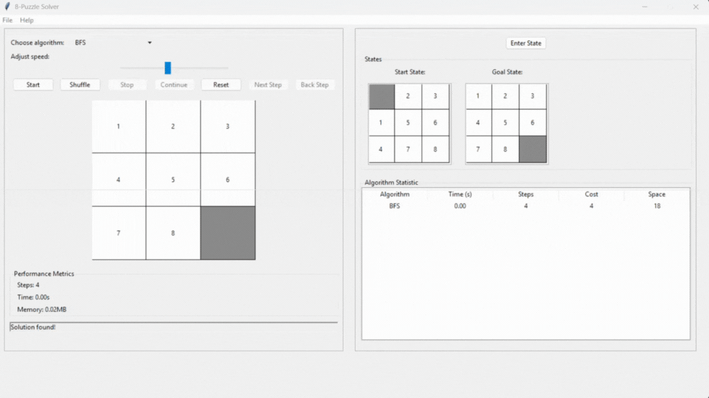
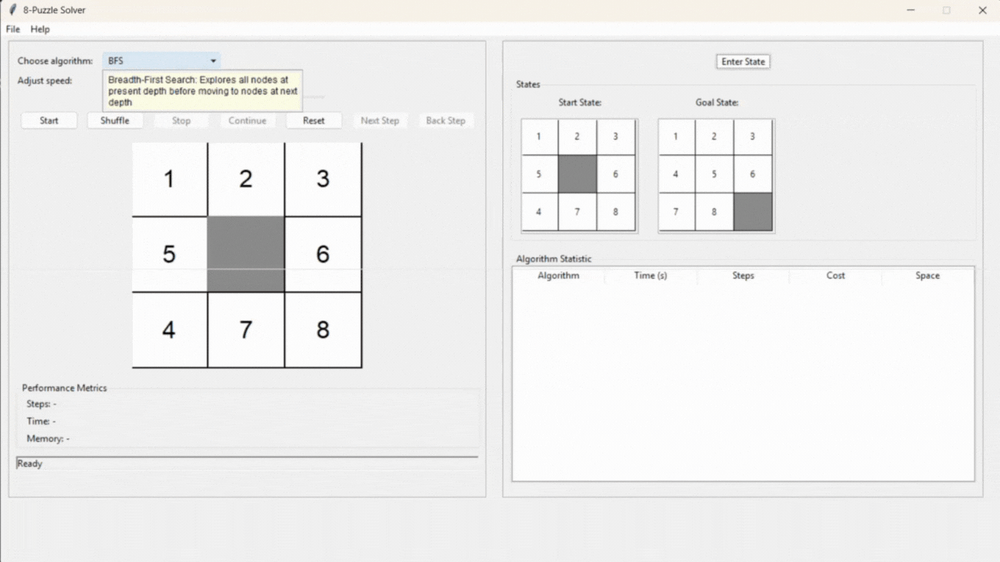
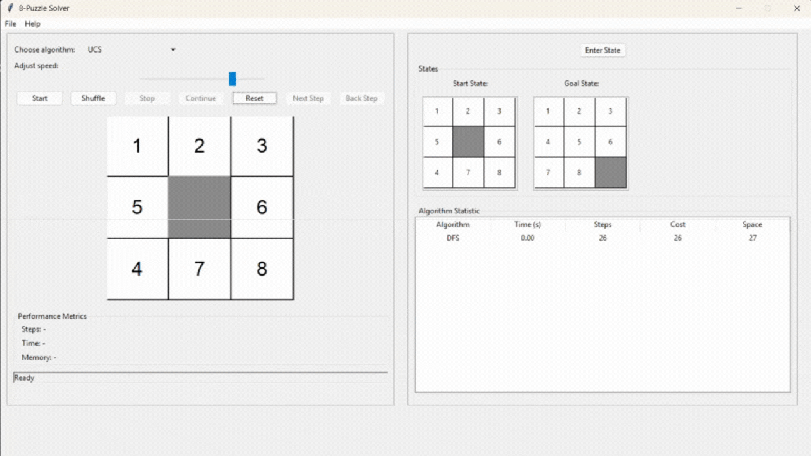
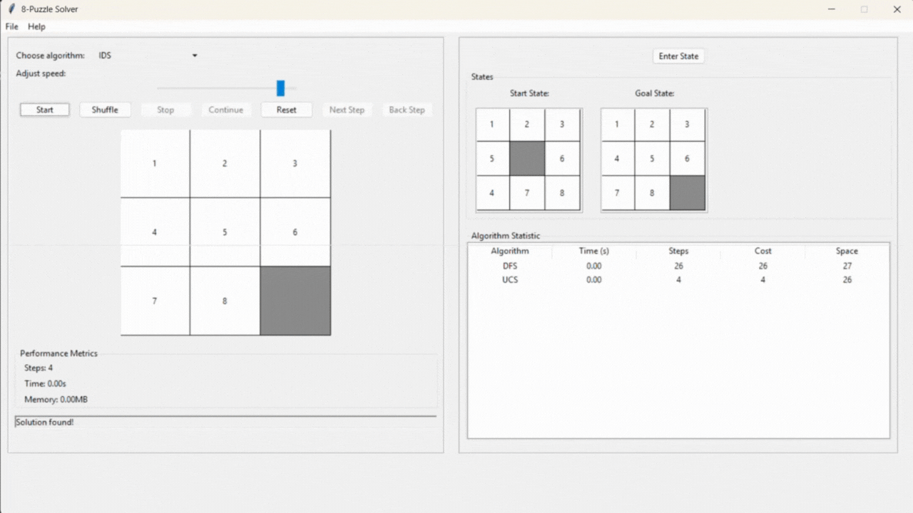
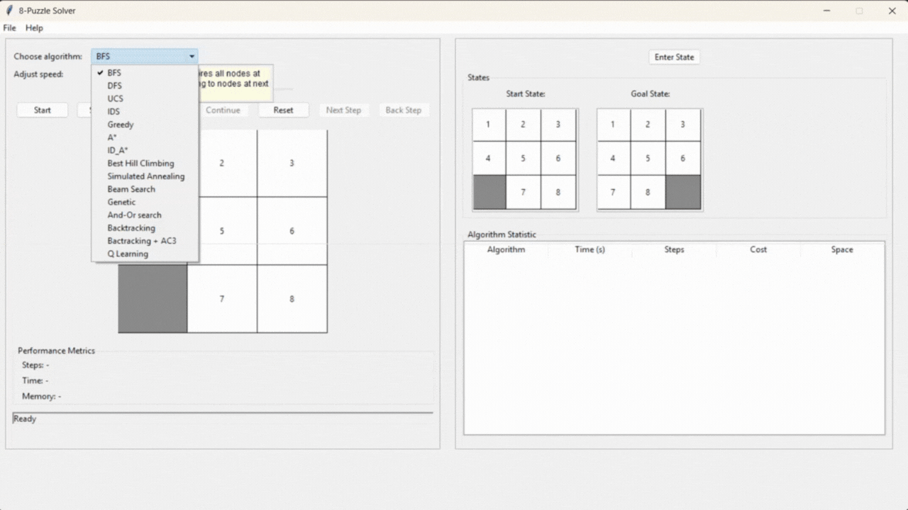
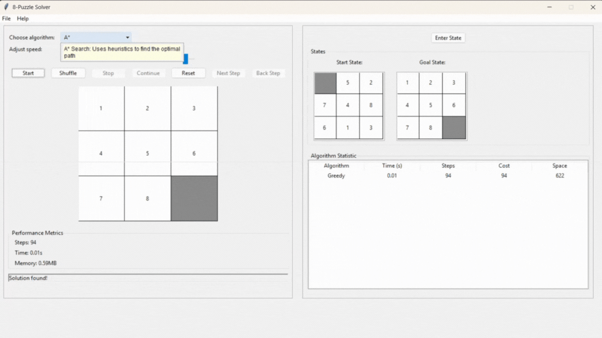
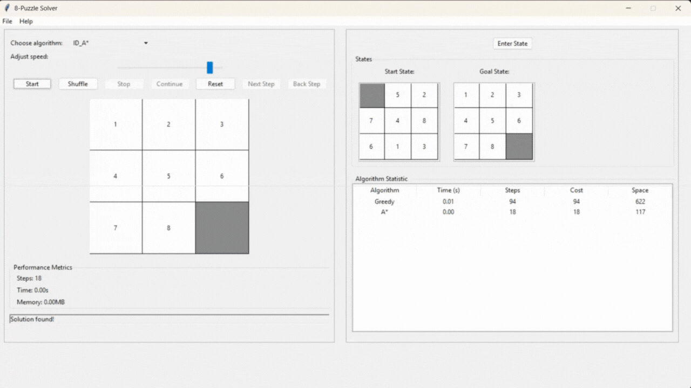
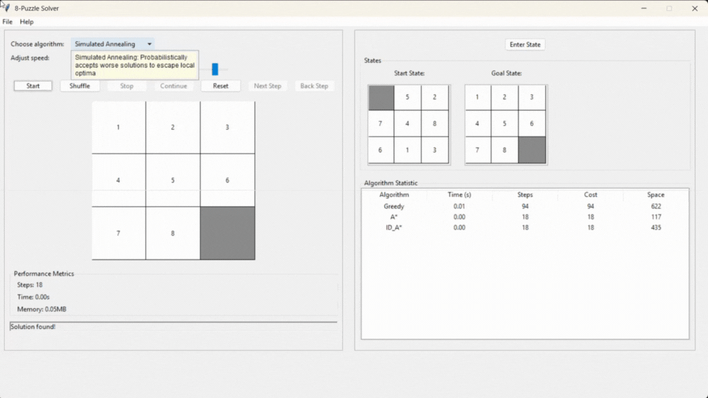
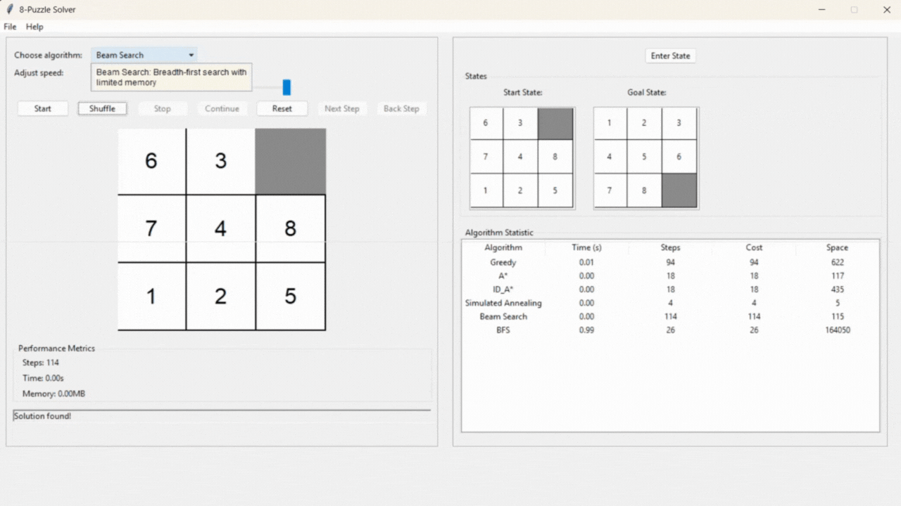

8-Puzzle Solver with AI Algorithms 🧩


Đây là một dự án toàn diện triển khai các thuật toán AI để giải bài toán 8-Puzzle, tích hợp giao diện đồ họa (GUI) bằng Tkinter để minh họa quá trình giải. Dự án được thực hiện trong khuôn khổ môn Nhập môn Trí tuệ Nhân tạo tại HCMUTE.
🚀 Tổng quan dự án
8-Puzzle Solver là một dự án sử dụng Python để triển khai nhiều thuật toán AI nhằm giải bài toán 8-Puzzle – một bài toán kinh điển về sắp xếp ô số. Dự án bao gồm các nhóm thuật toán như tìm kiếm không thông tin, tìm kiếm có thông tin, tìm kiếm cục bộ, tìm kiếm trong môi trường phức tạp, tìm kiếm có điều kiện ràng buộc, và học tăng cường. Ngoài ra, dự án cung cấp một giao diện GUI bằng Tkinter để người dùng có thể theo dõi trực quan quá trình giải, là công cụ tuyệt vời để học tập và so sánh các kỹ thuật AI.
📑 Mục lục
- Tổng quan dự án
- Mục tiêu
- Nội dung dự án
- Thuật toán
- Cài đặt
- Kết luận
- Tác giả
🎯 Mục tiêu
- Triển khai các thuật toán AI: Ứng dụng nhiều thuật toán tìm kiếm (uninformed, informed, local search, complex environment, constraint satisfaction, reinforcement learning) để giải bài toán 8-puzzle, giúp người dùng hiểu rõ cách hoạt động và hiệu suất của từng thuật toán.
- So sánh hiệu suất: Phân tích và so sánh hiệu quả của các thuật toán về thời gian chạy, bộ nhớ sử dụng, và tính tối ưu của đường đi để hiểu rõ ưu/nhược điểm của từng thuật toán.
- Trực quan hóa: Cung cấp giao diện đồ họa (GUI) để người dùng có thể theo dõi quá trình giải bài toán một cách trực quan.
📝 Nội dung dự án
Dự án 8-Puzzle Visualizer triển khai bài toán 8-puzzle, một bài toán cổ điển trong Trí tuệ Nhân tạo, với mục tiêu sắp xếp các ô số từ trạng thái ban đầu về trạng thái mục tiêu thông qua việc di chuyển ô trống. Dự án tích hợp bảy nhóm thuật toán tìm kiếm, bao gồm:
- Tìm kiếm không thông tin (Uninformed Search): Các thuật toán dựa trên khám phá mù, không sử dụng hàm heuristic.
- Tìm kiếm có thông tin (Informed Search): Các thuật toán sử dụng heuristic để hướng dẫn tìm kiếm một cách hiệu quả hơn.
- Tìm kiếm cục bộ (Local Search): Các thuật toán cải thiện trạng thái dần dần dựa trên hàm đánh giá.
- Tìm kiếm trong môi trường phức tạp (Complex Environment Search): Các thuật toán xử lý các tình huống không xác định hoặc quan sát không đầy đủ.
- Tìm kiếm có điều kiện ràng buộc (Constraint Satisfaction Problem): Các thuật toán giải bài toán bằng cách gán các giá trị thỏa mãn các ràng buộc.
- Học tăng cường (Reinforcement Learning): Các thuật toán học từ kinh nghiệm để tìm lời giải tối ưu.
- Tìm kiếm không xác định (Non-deterministic Search): Các thuật toán xử lý các tình huống không xác định hoặc có nhiều điều kiện phức tạp.
Mỗi nhóm được trình bày chi tiết với:
- Thành phần chính của bài toán: Mô tả trạng thái, hành động, kiểm tra mục tiêu, và hàm heuristic (nếu có).
- Lời giải: Chuỗi trạng thái và hành động từ trạng thái ban đầu đến mục tiêu.
- GIF minh họa: Hình ảnh động thể hiện quá trình giải của từng thuật toán.
- So sánh hiệu suất: Bảng so sánh ghi lại thời gian thực thi và số lần mở rộng (expansions) để so sánh (cùng trạng thái ban đầu và mục tiêu).
- Nhận xét: Phân tích ưu điểm, nhược điểm và hiệu quả khi áp dụng vào bài toán 8-puzzle.
Thuật toán
Dự án triển khai một loạt thuật toán AI đa dạng, được phân loại thành bảy nhóm chính:
Breadth-First Search (BFS)
- Mô tả: BFS (Tìm kiếm theo chiều rộng) khám phá tất cả các trạng thái theo từng cấp độ độ sâu, từ trạng thái ban đầu đến trạng thái mục tiêu, sử dụng hàng đợi (queue).
- Phân tích lý thuyết:
- Tính tối ưu: Đảm bảo tìm ra con đường ngắn nhất trong không gian tìm kiếm không có trọng số.
- Hoạt động: Mở rộng tất cả trạng thái ở độ sâu hiện tại trước khi đi sâu hơn.
- Quản lý vòng lặp: Sử dụng tập hợp
visited để tránh lặp lại trạng thái.
- Ưu điểm:
- Đảm bảo tính tối ưu và hoàn chỉnh.
- Nhược điểm:
- Tiêu tốn nhiều bộ nhớ.
- Thời gian chạy chậm nếu độ sâu lớn.
- Độ phức tạp:
- Thời gian: ( O(b^d) ), với ( b ) là nhánh trung bình (2-4), ( d ) là độ sâu mục tiêu.
- Bộ nhớ: ( O(b^d) ).
- Hình ảnh minh họa: 
- Hình ảnh bổ sung:

- Liên kết: Wikipedia - Breadth-first search
- Nhận xét: BFS lý tưởng khi cần giải pháp tối ưu, nhưng tốn bộ nhớ và chậm với độ sâu lớn.
Depth-First Search (DFS)
- Mô tả: DFS (Tìm kiếm theo chiều sâu) khám phá sâu nhất một nhánh trước khi quay lui, sử dụng ngăn xếp (stack) hoặc đệ quy.
- Phân tích lý thuyết:
- Tính tối ưu: Không đảm bảo đường đi ngắn nhất.
- Hoạt động: Đi sâu vào một nhánh, quay lui nếu không tìm thấy mục tiêu.
- Quản lý vòng lặp: Sử dụng tập hợp
visited để tránh lặp.
- Ưu điểm:
- Tiết kiệm bộ nhớ.
- Nhanh nếu nhánh đầu chứa mục tiêu.
- Nhược điểm:
- Không tối ưu, có nguy cơ tràn ngăn xếp.
- Độ phức tạp:
- Thời gian: ( O(b^d) ).
- Bộ nhớ: ( O(d) ).
- Hình ảnh minh họa: 
- Hình ảnh bổ sung:

- Liên kết: Wikipedia - Depth-first search
- Nhận xét: DFS phù hợp khi bộ nhớ hạn chế, nhưng không hiệu quả nếu cần đường đi tối ưu.
- Mô tả: UCS mở rộng trạng thái dựa trên chi phí thấp nhất từ trạng thái ban đầu, sử dụng hàng đợi ưu tiên.
- Phân tích lý thuyết:
- Tính tối ưu: Đảm bảo đường đi ngắn nhất trong không gian có trọng số.
- Hoạt động: Chọn trạng thái có chi phí thấp nhất để mở rộng.
- Quản lý vòng lặp: Sử dụng tập hợp
visited và cập nhật nếu tìm thấy chi phí thấp hơn.
- Ưu điểm:
- Đảm bảo tính tối ưu và hoàn chỉnh.
- Nhược điểm:
- Tiêu tốn nhiều bộ nhớ, tương tự BFS.
- Độ phức tạp:
- Thời gian: ( O(b^{C*/ε}) ), với ( C* ) là chi phí tối ưu, ( ε = 1 ).
- Bộ nhớ: ( O(b^{C*/ε}) ).
- Hình ảnh minh họa: 
- Hình ảnh bổ sung:

- Liên kết: GeeksforGeeks - Uniform Cost Search
- Nhận xét: UCS hiệu quả khi cần giải pháp tối ưu, nhưng không vượt trội so với BFS trong 8-puzzle do chi phí đồng nhất.
Iterative Deepening Search (IDS)
- Mô tả: IDS kết hợp BFS và DFS, thực hiện DFS với giới hạn độ sâu tăng dần.
- Phân tích lý thuyết:
- Tính tối ưu: Đảm bảo đường đi ngắn nhất trong không gian không có trọng số.
- Hoạt động: Lặp DFS với độ sâu tăng dần cho đến khi tìm thấy mục tiêu.
- Quản lý vòng lặp: Sử dụng tập hợp
visited trong mỗi lần lặp.
- Ưu điểm:
- Tối ưu và tiết kiệm bộ nhớ hơn BFS.
- Nhược điểm:
- Chậm hơn BFS do lặp lại nhiều lần.
- Độ phức tạp:
- Thời gian: ( O(b^d) ), chậm hơn BFS do lặp.
- Bộ nhớ: ( O(bd) ).
- Hình ảnh minh họa: 
- Liên kết: GeeksforGeeks - Iterative Deepening Search
- Nhận xét: IDS cân bằng giữa tính tối ưu và bộ nhớ, nhưng chậm hơn BFS.
- Hình ảnh so sánh hiệu suất:

- Nhận xét: BFS và UCS đảm bảo tính tối ưu nhưng tốn bộ nhớ; DFS tiết kiệm bộ nhớ nhưng không tối ưu; IDS cân bằng nhưng chậm hơn.
Greedy Best-First Search
- Mô tả: Chọn trạng thái có giá trị heuristic thấp nhất để mở rộng, sử dụng hàng đợi ưu tiên.
- Phân tích lý thuyết:
- Tính tối ưu: Không đảm bảo đường đi ngắn nhất.
- Hàm heuristic: Khoảng cách Manhattan.
- Hoạt động: Ưu tiên trạng thái có heuristic thấp nhất.
- Quản lý vòng lặp: Sử dụng tập hợp
visited.
- Ưu điểm:
- Nhanh hơn uninformed search.
- Tiết kiệm bộ nhớ nếu heuristic tốt.
- Nhược điểm:
- Không tối ưu, phụ thuộc vào heuristic.
- Độ phức tạp:
- Thời gian: ( O(b^d) ).
- Bộ nhớ: ( O(b^d) ).
- Hình ảnh minh họa: 
- Hình ảnh bổ sung:

- Liên kết: GeeksforGeeks - Greedy Best-First Search
- Nhận xét: GBFS nhanh hơn uninformed search nhưng không tối ưu, hiệu quả phụ thuộc vào heuristic.
A* Search
- Mô tả: Kết hợp chi phí đã đi ( g ) và heuristic ( h ), chọn trạng thái có ( f = g + h ) thấp nhất.
- Phân tích lý thuyết:
- Tính tối ưu: Đảm bảo đường đi ngắn nhất nếu heuristic admissible và consistent.
- Hàm heuristic: Khoảng cách Manhattan.
- Hoạt động: Mở rộng trạng thái có ( f ) thấp nhất.
- Quản lý vòng lặp: Cập nhật đường đi nếu tìm thấy ( f ) thấp hơn.
- Ưu điểm:
- Tối ưu và hiệu quả hơn BFS.
- Nhược điểm:
- Độ phức tạp:
- Thời gian: ( O(b^d) ), nhanh hơn BFS.
- Bộ nhớ: ( O(b^d) ).
- Hình ảnh minh họa: 
- Hình ảnh bổ sung:

- Liên kết: GeeksforGeeks - A* Search Algorithm
- Nhận xét: A* là thuật toán hiệu quả nhất trong nhóm informed search cho 8-puzzle, nhưng tốn bộ nhớ.
Iterative Deepening A* (IDA*)
- Mô tả: Kết hợp IDS và A*, sử dụng ngưỡng ( f = g + h ) tăng dần.
- Phân tích lý thuyết:
- Tính tối ưu: Đảm bảo nếu heuristic admissible và consistent.
- Hoạt động: Thực hiện DFS với ngưỡng ( f ), tăng ngưỡng nếu không tìm thấy mục tiêu.
- Ưu điểm:
- Tối ưu, tiết kiệm bộ nhớ hơn A*.
- Nhược điểm:
- Độ phức tạp:
- Thời gian: ( O(b^d) ).
- Bộ nhớ: ( O(d) ).
- Hình ảnh minh họa: 
- Liên kết: GeeksforGeeks - Iterative Deepening A*
- Nhận xét: IDA* phù hợp khi cần tiết kiệm bộ nhớ, nhưng chậm hơn A*.
Tìm kiếm cục bộ (Local Search)
Best Hill Climbing
- Mô tả: Chọn trạng thái con có heuristic tốt hơn trạng thái hiện tại.
- Phân tích lý thuyết:
- Tính tối ưu: Không đảm bảo, dễ mắc kẹt tại cực trị cục bộ.
- Hoạt động: Di chuyển theo hướng tăng heuristic.
- Ưu điểm:
- Nhược điểm:
- Dễ mắc kẹt, không tối ưu.
- Độ phức tạp:
- Thời gian: Phụ thuộc vào số lần lặp.
- Bộ nhớ: ( O(1) ).
- Liên kết: GeeksforGeeks - Hill Climbing
- Nhận xét: Best Hill Climbing nhanh nhưng dễ bị kẹt tại cực trị cục bộ, không đảm bảo giải pháp tối ưu.
Simulated Annealing
- Mô tả: Chấp nhận trạng thái con tệ hơn với xác suất giảm dần, mô phỏng làm nguội kim loại.
- Phân tích lý thuyết:
- Tính tối ưu: Có thể tối ưu nếu lịch làm nguội chậm.
- Hoạt động: Chọn trạng thái con ngẫu nhiên, chấp nhận dựa trên nhiệt độ.
- Ưu điểm:
- Thoát cực trị cục bộ, linh hoạt.
- Nhược điểm:
- Phụ thuộc vào lịch làm nguội.
- Độ phức tạp:
- Thời gian: Phụ thuộc vào số lần lặp.
- Bộ nhớ: ( O(1) ).
- Hình ảnh minh họa: 
- Liên kết: Wikipedia - Simulated Annealing
- Nhận xét: Simulated Annealing linh hoạt hơn Hill Climbing, nhưng hiệu quả phụ thuộc vào tham số.
Beam Search
- Mô tả: Giới hạn số trạng thái giữ lại tại mỗi bước (beam width), chọn ( k ) trạng thái tốt nhất dựa trên heuristic.
- Phân tích lý thuyết:
- Tính tối ưu: Không đảm bảo, có thể bỏ qua đường đi tốt nhất.
- Hoạt động: Mở rộng ( k ) trạng thái tốt nhất, giữ lại ( k ) trạng thái con tốt nhất.
- Quản lý vòng lặp: Giới hạn số trạng thái để tránh lặp vô hạn.
- Ưu điểm:
- Tiết kiệm bộ nhớ, nhanh nếu ( k ) nhỏ.
- Linh hoạt điều chỉnh ( k ).
- Nhược điểm:
- Không tối ưu, phụ thuộc vào ( k ) và heuristic.
- Độ phức tạp:
- Thời gian: ( O(kbd) ), với ( b ) là nhánh, ( d ) là độ sâu.
- Bộ nhớ: ( O(k) ).
- Hình ảnh minh họa: 
- Hình ảnh bổ sung:

- Liên kết: GeeksforGeeks - Beam Search
- Nhận xét: Beam Search phù hợp khi cần cân bằng giữa tốc độ và chất lượng, nhưng không đảm bảo giải pháp tối ưu trong 8-puzzle.
Tìm kiếm trong môi trường phức tạp (Complex Environment Search)
Partially Observable Search
- Mô tả: Xử lý bài toán 8-puzzle trong môi trường chỉ quan sát được một phần (ví dụ: không biết trạng thái đầy đủ của bảng).
- Phân tích lý thuyết:
- Tính tối ưu: Không đảm bảo do thiếu thông tin.
- Hoạt động: Sử dụng mô hình niềm tin (belief state) để ước lượng trạng thái thực tế, chọn hành động dựa trên xác suất.
- Quản lý vòng lặp: Cập nhật niềm tin sau mỗi hành động và quan sát.
- Ưu điểm:
- Phù hợp với môi trường không xác định.
- Có thể mô phỏng các tình huống thực tế hơn.
- Nhược điểm:
- Phức tạp, tốn tài nguyên để duy trì niềm tin.
- Không hiệu quả trong 8-puzzle do bài toán thường xác định.
- Độ phức tạp:
- Thời gian: ( O(b^d \cdot |B|) ), với ( B ) là không gian niềm tin.
- Bộ nhớ: ( O(|B|) ).
- Hình ảnh minh họa:

- Liên kết: Wikipedia - Partially Observable Markov Decision Process
- Nhận xét: Partially Observable Search phù hợp cho các bài toán thực tế hơn, nhưng không cần thiết trong 8-puzzle do môi trường xác định.
No Observation Search
- Mô tả: Xử lý bài toán 8-puzzle mà không có quan sát trực tiếp, dựa trên chiến lược cố định hoặc hành động ngẫu nhiên.
- Phân tích lý thuyết:
- Tính tối ưu: Không đảm bảo, gần như không khả thi.
- Hoạt động: Thực hiện chuỗi hành động cố định hoặc ngẫu nhiên, kiểm tra trạng thái mục tiêu khi có thể.
- Quản lý vòng lặp: Giới hạn số bước để tránh lặp vô hạn.
- Ưu điểm:
- Đơn giản, không cần quản lý trạng thái phức tạp.
- Nhược điểm:
- Hầu như không hiệu quả trong 8-puzzle do thiếu thông tin.
- Phụ thuộc vào may mắn.
- Độ phức tạp:
- Thời gian: ( O(b^d) ), nhưng thường không tìm được giải pháp.
- Bộ nhớ: ( O(1) ).
- Hình ảnh minh họa:

- Liên kết: Wikipedia - Open-Loop Controller
- Nhận xét: No Observation Search không thực tế cho 8-puzzle, chỉ mang tính lý thuyết.
AND-OR Search Algorithm
- Mô tả: Xử lý bài toán với nhánh AND/OR, xây dựng cây tìm kiếm thỏa mãn điều kiện phức tạp.
- Phân tích lý thuyết:
- Tính tối ưu: Phụ thuộc vào triển khai, không luôn tối ưu.
- Hoạt động: Xây dựng cây với nút AND (tất cả điều kiện con đúng) và OR (một điều kiện con đúng).
- Quản lý vòng lặp: Kiểm tra trạng thái để tránh lặp.
- Ưu điểm:
- Phù hợp với bài toán không xác định.
- Nhược điểm:
- Phức tạp, tốn tài nguyên nếu không gian lớn.
- Độ phức tạp:
- Thời gian: ( O(b^d) ).
- Bộ nhớ: ( O(b^d) ).
- Hình ảnh minh họa:

- Liên kết: Wikipedia - AND-OR Search
- Nhận xét: AND-OR Search phù hợp cho các bài toán phức tạp, nhưng ít hiệu quả trong 8-puzzle do tính chất xác định của bài toán.
Tìm kiếm có điều kiện ràng buộc (Constraint Satisfaction Problem)
Constraint Testing
- Mô tả: Kiểm tra các trạng thái của 8-puzzle để đảm bảo thỏa mãn các ràng buộc, như mỗi ô chỉ chứa một số duy nhất và ô trống có thể di chuyển hợp lệ.
- Phân tích lý thuyết:
- Tính tối ưu: Đảm bảo trạng thái hợp lệ, nhưng không đảm bảo đường đi tối ưu.
- Hoạt động: Kiểm tra từng trạng thái con để đảm bảo các số từ 0-8 xuất hiện đúng một lần và các di chuyển (lên, xuống, trái, phải) hợp lệ.
- Quản lý vòng lặp: Sử dụng tập hợp trạng thái đã kiểm tra để tránh lặp.
- Ưu điểm:
- Đơn giản, dễ triển khai để kiểm tra tính hợp lệ.
- Hỗ trợ các thuật toán khác bằng cách loại bỏ trạng thái không hợp lệ.
- Nhược điểm:
- Không trực tiếp tìm lời giải, chỉ hỗ trợ kiểm tra.
- Có thể tốn thời gian nếu số trạng thái lớn.
- Độ phức tạp:
- Thời gian: ( O(1) ) cho mỗi kiểm tra trạng thái, nhưng tổng thời gian phụ thuộc vào số trạng thái.
- Bộ nhớ: ( O(1) ) cho mỗi kiểm tra.
- Hình ảnh minh họa:

- Liên kết: GeeksforGeeks - Constraint Satisfaction Problems
- Nhận xét: Constraint Testing hữu ích để đảm bảo tính hợp lệ của trạng thái trong 8-puzzle, nhưng cần kết hợp với các thuật toán tìm kiếm khác để tìm lời giải.
Backtracking CSP
- Mô tả: Sử dụng tìm kiếm quay lui để gán giá trị cho các ô trong 8-puzzle, đảm bảo thỏa mãn các ràng buộc (mỗi số xuất hiện một lần, di chuyển hợp lệ).
- Phân tích lý thuyết:
- Tính tối ưu: Không đảm bảo đường đi ngắn nhất, nhưng đảm bảo trạng thái hợp lệ.
- Hoạt động: Gán giá trị cho từng ô, quay lui nếu vi phạm ràng buộc, tiếp tục cho đến khi đạt trạng thái mục tiêu.
- Quản lý vòng lặp: Quay lui tự động tránh lặp trạng thái không hợp lệ.
- Ưu điểm:
- Hiệu quả trong việc tìm trạng thái hợp lệ.
- Có thể kết hợp với heuristic để cải thiện tốc độ.
- Nhược điểm:
- Chậm nếu không gian trạng thái lớn.
- Không tối ưu về số bước di chuyển.
- Độ phức tạp:
- Thời gian: ( O(b^d) ), với ( b ) là số giá trị có thể gán, ( d ) là số ô.
- Bộ nhớ: ( O(d) ) cho ngăn xếp quay lui.
- Hình ảnh minh họa:

- Liên kết: GeeksforGeeks - Backtracking CSP
- Nhận xét: Backtracking CSP phù hợp để kiểm tra tính khả thi, nhưng không hiệu quả trong việc tìm đường đi tối ưu cho 8-puzzle.
Backtracking AC-3
- Mô tả: Kết hợp Backtracking CSP với thuật toán AC-3 để duy trì tính nhất quán cung (arc consistency), giảm không gian tìm kiếm bằng cách loại bỏ các giá trị không hợp lệ trước khi quay lui.
- Phân tích lý thuyết:
- Tính tối ưu: Không đảm bảo đường đi ngắn nhất.
- Hoạt động: Sử dụng AC-3 để loại bỏ các giá trị không thỏa mãn ràng buộc, sau đó áp dụng quay lui để gán giá trị.
- Quản lý vòng lặp: AC-3 giảm số trạng thái cần kiểm tra.
- Ưu điểm:
- Hiệu quả hơn Backtracking CSP nhờ giảm không gian tìm kiếm.
- Đảm bảo tính hợp lệ của trạng thái.
- Nhược điểm:
- Phức tạp hơn Backtracking CSP.
- Vẫn không tối ưu về số bước.
- Độ phức tạp:
- Thời gian: ( O(b^d) ), nhưng nhanh hơn Backtracking CSP nhờ AC-3.
- Bộ nhớ: ( O(d) ).
- Hình ảnh minh họa:

- Liên kết: Wikipedia - AC-3 Algorithm
- Nhận xét: Backtracking AC-3 cải thiện hiệu suất so với Backtracking CSP, nhưng vẫn không lý tưởng cho 8-puzzle do không tối ưu đường đi.
Học tăng cường (Reinforcement Learning)
Q-Learning
- Mô tả: Q-Learning là một thuật toán học tăng cường, học cách chọn hành động tối ưu thông qua thử-và-sai, dựa trên bảng Q lưu trữ giá trị hành động-trạng thái.
- Phân tích lý thuyết:
- Tính tối ưu: Có thể đạt giải pháp tối ưu nếu học đủ lâu và tham số được điều chỉnh tốt.
- Hoạt động: Cập nhật bảng Q dựa trên phần thưởng (ví dụ: -1 cho mỗi bước, +100 khi đạt mục tiêu). Chọn hành động dựa trên giá trị Q cao nhất hoặc ngẫu nhiên (epsilon-greedy).
- Quản lý vòng lặp: Tránh lặp vô hạn bằng cách giới hạn số bước hoặc sử dụng epsilon decay.
- Ưu điểm:
- Học từ kinh nghiệm, không cần mô hình môi trường.
- Có thể thích nghi với các trạng thái mới.
- Nhược điểm:
- Chậm để hội tụ trong không gian trạng thái lớn (8-puzzle có ( 9!/2 = 181,440 ) trạng thái khả thi).
- Phụ thuộc vào tham số (alpha, gamma, epsilon).
- Độ phức tạp:
- Thời gian: Phụ thuộc vào số lần lặp và kích thước không gian trạng thái.
- Bộ nhớ: ( O(|S| \cdot |A|) ), với ( S ) là số trạng thái, ( A ) là số hành động.
- Hình ảnh minh họa:

- Liên kết: GeeksforGeeks - Q-Learning
- Nhận xét: Q-Learning phù hợp cho các bài toán cần học dài hạn, nhưng không hiệu quả trong 8-puzzle do không gian trạng thái lớn và yêu cầu tính tối ưu nhanh.
Cài đặt
Để chạy dự án trên máy của bạn, hãy làm theo các bước sau:
- Clone repository:
git clone https://github.com/taidang05/8_Puzzles_AI_Project.git
cd 8_Puzzles_AI_Project
- Cài đặt Python:
Đảm bảo bạn đã cài đặt Python phiên bản 3.8 hoặc cao hơn. Nếu chưa có, hãy tải tại python.org.
- Cài đặt các thư viện cần thiết:
Dự án sử dụng các thư viện Python sau:
tkinter: Đã được tích hợp sẵn với Python (không cần cài thêm).
numpy: Dùng để xử lý ma trận trạng thái.
- Chạy dự án.
📊 Kết luận
Dự án 8-Puzzle Solver đã triển khai thành công nhiều thuật toán AI để giải bài toán 8-Puzzle, bao gồm các nhóm tìm kiếm truyền thống (Uninformed Search, Informed Search, Local Search), tìm kiếm trong môi trường phức tạp, tìm kiếm có điều kiện ràng buộc, và học tăng cường (Reinforcement Learning). Kết quả cho thấy các thuật toán không chỉ giải quyết được bài toán mà còn cung cấp cơ sở để so sánh hiệu suất dựa trên các tiêu chí như thời gian chạy, bộ nhớ sử dụng, và số bước tối ưu. Điều này giúp làm rõ ưu điểm và hạn chế của từng thuật toán trong các tình huống khác nhau.
Điểm nổi bật của dự án là giao diện trực quan được xây dựng bằng Tkinter, cho phép người dùng theo dõi quá trình giải bài toán một cách trực quan. Giao diện hiển thị trạng thái ban đầu, các bước di chuyển, và trạng thái mục tiêu, mang lại trải nghiệm học tập sinh động. Công cụ này không chỉ minh họa cách hoạt động của từng thuật toán mà còn hỗ trợ người dùng nhập trạng thái tùy chỉnh để thử nghiệm.
Với mã nguồn rõ ràng và giao diện thân thiện, dự án là một tài liệu học tập hữu ích, kết hợp giữa lý thuyết và thực hành. Kết quả thực nghiệm từ dự án cũng cung cấp dữ liệu giá trị để phân tích hiệu quả của các thuật toán AI trong các ngữ cảnh khác nhau.
👤 Tác giả
- Giảng viên hướng dẫn: TS. Phan Thị Huyền Trang
- Sinh viên thực hiện: Đặng Ngọc Tài
- Mã số sinh viên: 23110304
- Mã lớp học: ARIN330585_04